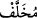
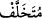
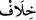

durma. Çünkü onlar, Allah’ı ve Rasûlü’nü inkâr ettiler ve fâsık olarak öldüler.
85. Onların malları ve evlatları seni hayrete düşürmesin: Allah onlara dünyada
bunlarla azap etmeyi ve kâfir olarak canlarının çıkmasını istiyor.
86. “Allah’a inanın, Rasûlü ile beraber cihâd edin!” diye bir sûre indirildiği zaman
içlerinden servet sahibi olanlar, senden izin istediler: “Bizi bırak, oturanlarla
beraber oturalım.” dediler.”
87. Geride kalan kadınlarla beraber olmaya râzı oldular, kalpleri mühürlendi,
artık onlar anlamazlar.
88. Fakat Rasûl ve onunla beraber inananlar, mallarıyla ve canlarıyla cihad
ettiler. İşte bütün hayırlar onlarındır ve işte kurtuluşa erenler onlardır.
89. Allah, onlar için altlarından nehirler akan, içlerinde sürekli kalacakları
cennetler hazırlamıştır. İşte büyük kurtuluş budur.
“Geride bırakılanlar” Bunlardan maksad, Nebî (a.s.)’ın Tebük gazvesine çıkarken
izin istemeleri üzerine kendilerine izin verip Medine’de bıraktığı münâfıklardır. “” insanın geride bıraktığı şey demektir. “” ise kendisi geride kalan demektir.
“Allah Rasûlü’nün hilâfına” yani Allah Rasûlü’nün arkasından ve O çıktıktan sonra
(oturmakla sevindiler), demektir. Nitekim Allah Rasûlü çıkmış, onlar ise
çıkmamışlardı. “” kelimesi, ayrıca muhalefet etmek mânâsına da gelebilir. Bu
takdirde “Peygamber cihada çıktığı halde kendileri cihaddan geri kalarak Peygamber’e
(a.s.) muhalefet ettikleri için sevindiler.” mânâsına gelir.
“yerlerinde oturup kalmalarına” savaşa çıkmayıp yurtlarında oturmalarına ve
savaştan geri kalmalarına “sevindiler.”
Kalplerinde taşıdıkları küfür ve ikiyüzlülüklerinin yanında rahatı ve bolluk içerisinde
yaşamayı, Allah’a itaat etmeye tercih ettikleri için “mallarıyla ve canlarıyla Allah
yolunda cihad etmekten hoşlanmadılar.” Âyette yer alan “sevindiler” ifadesi aslında
“hoşlanmadılar” ifadesine delalet etmektedir. “Hoşlanmadılar” ifadesi ayrıca
zikredilerek, mallarını ve canlarını Allah yolunda harcayan ve Allah Teâlâ’nın rızasını
kazanmayı tercih eden müminlere ta‘riz yapılmıştır. “Hoşlanmadılar” sözü, mânâ
bakımından “sevindiler” sözüne terstir. Çünkü “sevinme” sevginin bir semeresidir.
Münâfıklar, birbirlerini savaştan geri koymak, savaşa çıkmayıp Medine’de oturmak
hususunda birbirlerine destek olmak ve aralarında kötülüğü tavsiye etmek üzere
birbirlerine: “Sıcakta sefere çıkmayın!” çünkü onun şiddetine dayanılmaz “dediler.”
Ya da münâfıklar bu sözü birbirlerine değil de müminlere söylemişlerdir. Bununla da
müminleri cihaddan alıkoymak ve onları iyilikten uzaklaşırmak istemişlerdi.
Böylece münâfıklar, küfür ve dalâlet hastalıklarından şu üçünü kendilerinde toplamış
oldular:
1. Savaşa katılmayıp Medine’de kalmakla sevinmek,